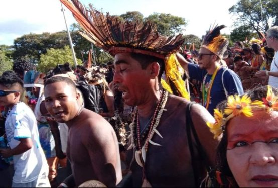
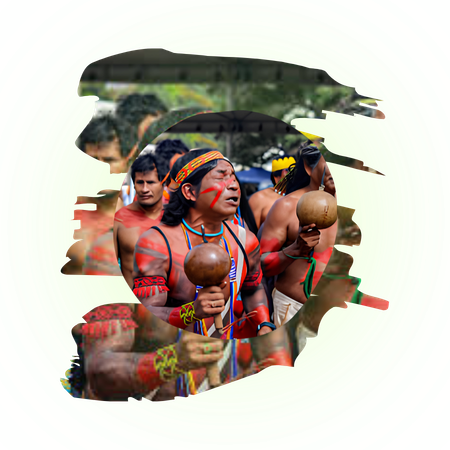

Anapuru Muypurá
- Localização:Brejo
- Idioma:Atualmente o povo
fala português
O Maranhão é lar de diversos povos indígenas que construíram, ao longo de séculos, modos de vida, culturas, línguas e saberes fundamentais para a identidade maranhense.
Explorar a história →
Explore o mapa e conheça os territórios indígenas presentes no Maranhão.

● Ocupação da Ilha de Upaon-Açu (São Luís) há pelo menos 7 mil anos. ● Chegada de grupos agricultores da Amazônia há cerca de 1.500 anos. ● Domínio dos Tupinambá, que ocupavam o litoral maranhense e fundaram diversas aldeias.
Conheça expressões culturais que fazem parte da memória, da espiritualidade e da identidade dos povos indígenas.
A luta pela proteção dos territórios continua sendo uma das principais formas de resistência dos povos indígenas no Maranhão.
Terra, saúde, educação, meio ambiente e respeito cultural ainda são temas centrais nas reivindicações indígenas.
Lideranças indígenas atuam na defesa dos direitos, da cultura, das línguas e dos territórios de seus povos.
A valorização das tradições, das memórias e dos saberes indígenas fortalece a identidade e combate o apagamento histórico.
Aprender sobre os povos indígenas do Maranhão é também reconhecer suas histórias, seus direitos, suas culturas e sua presença viva na atualidade.
Conteúdos para estudar a história indígena de forma respeitosa, valorizando fontes confiáveis e diferentes perspectivas.
Os povos indígenas não pertencem apenas ao passado. Eles vivem, estudam, trabalham, produzem cultura e lutam por seus direitos.
A educação indígena valoriza línguas, memórias, territórios, saberes tradicionais e formas próprias de ensinar e aprender.
Conhecer é uma forma de combater preconceitos e fortalecer o respeito à diversidade dos povos originários.

Teste seus conhecimentos sobre símbolos, pinturas, tradições e formas de expressão cultural.
Este site foi desenvolvido com o objetivo de apresentar, de forma educativa e acessível, informações sobre os povos indígenas do Maranhão, destacando sua história, seus territórios, suas tradições, suas lutas e sua importância para a formação cultural do estado.
A proposta é combater visões estereotipadas, mostrar que os povos indígenas não pertencem apenas ao passado e reforçar a importância do respeito, da memória e da valorização dos povos originários.
Criar uma experiência visual e informativa sobre os povos indígenas presentes no Maranhão.
Valorizar histórias, culturas, línguas e saberes que fazem parte da identidade maranhense.
Incentivar o aprendizado com respeito, consciência histórica e responsabilidade social.
Projeto desenvolvido para fins educativos, com foco na valorização dos povos indígenas do Maranhão.


.jfif)


.jfif)